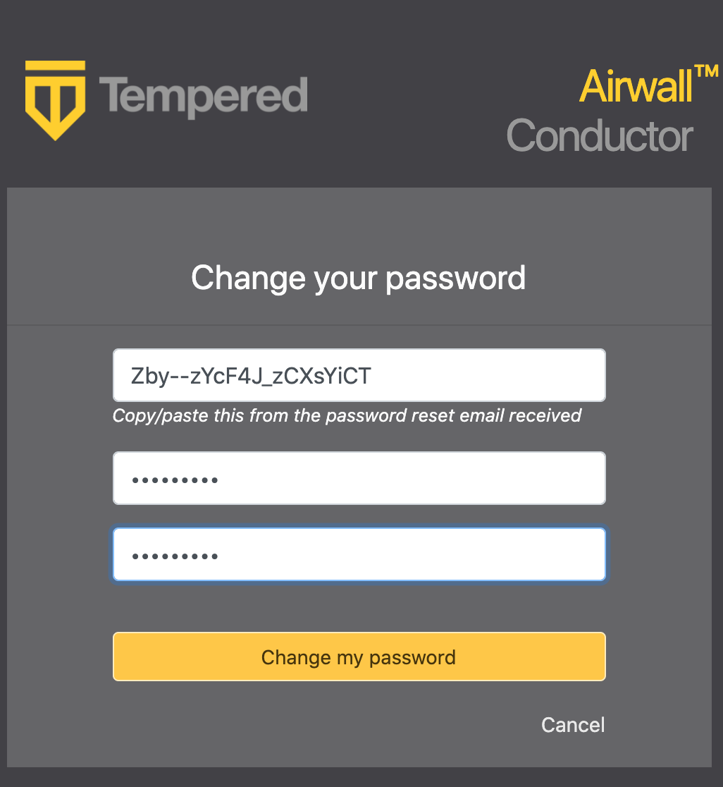
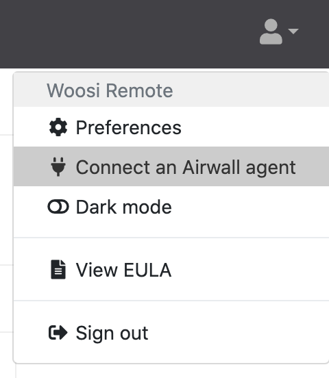
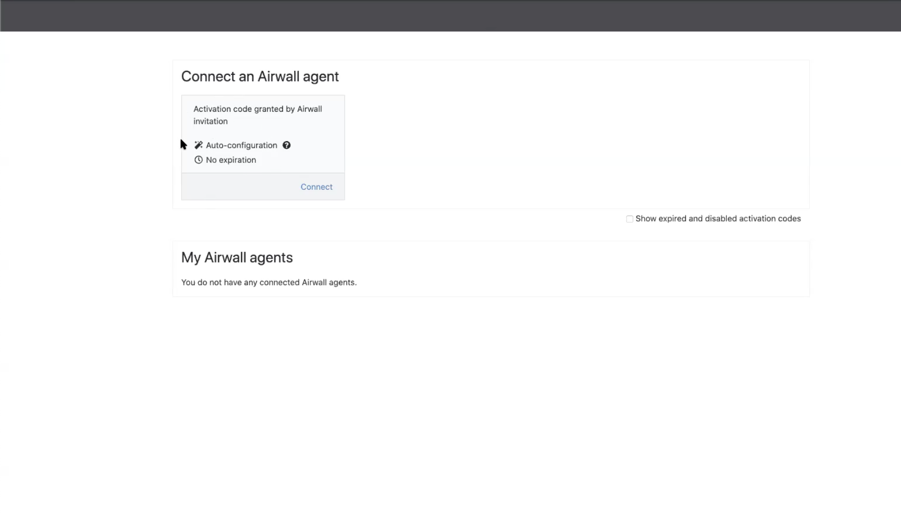
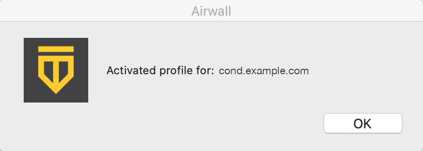
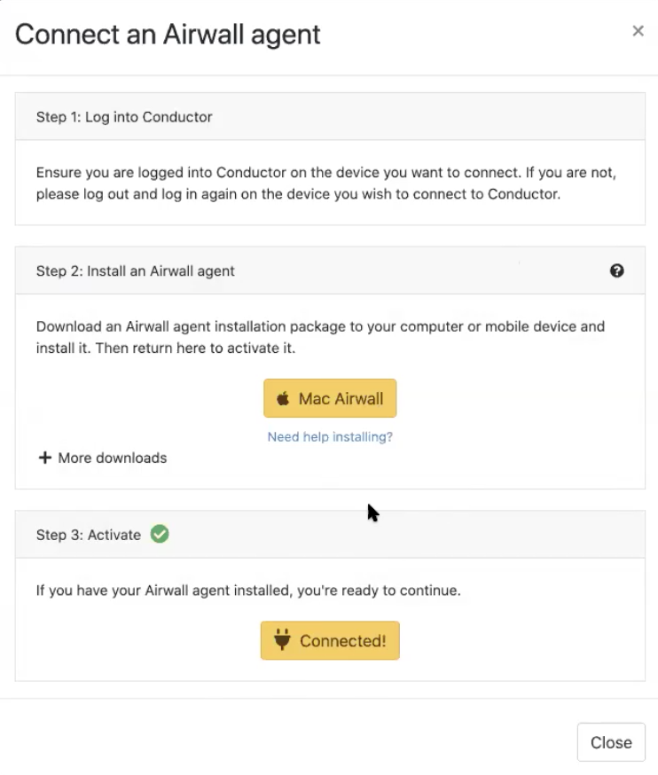
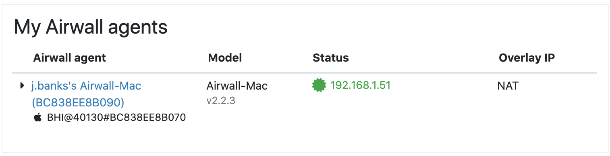
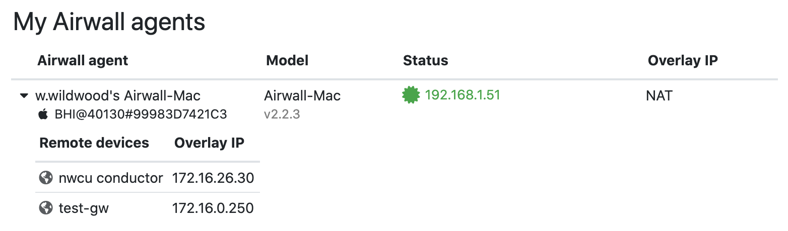

I have a "Finish Setting up my account" email
Connect your Airwall Agent or Server to an Airwall secure network from the "Finish setting up my account" email.
- Install an Airwall Agent or Server.
- From the computer, cellphone, or tablet that you want to connect to this Airwall secure network, open the “Finish setting up your account” link in the email.
-
Enter and confirm a password, then click Change my
password. If the token is not filled in, either click the link
in the email that has the token, or copy the token from the email and paste in
the top box.

-
If you are not on the Connect an Airwall Agent page,
click your profile icon in the upper right and select Connect an
Airwall Agent.

-
On the Connect an Airwall Agent page, under
Activation code granted box, click
Connect.

-
Follow the Connect an Airwall Agent steps to install the
Airwall Agent or Server
for your computer or mobile device.
If your computer or mobile device is not shown, open More downloads to find the correct version to install.
-
When the Airwall Agent or Server is
installed, come back to the Connect an Airwall Agent
page, and click Activate. You may need to give permission
for the Airwall Agent or Server to make changes to your program.
Activation creates a profile in your Airwall Agent or Server that you can use to access resources on the Airwall secure network. You can have multiple profiles if you need to connect to different secure networks. See Create or Edit Airwall Agent or Server Profiles.
Note: If you do not have an Activation code, you can select Request a Connection to send the Airwall secure network administrator a request to add you to the network.
-
When it’s finished, you’ll see an confirmation that your profile has been
activated.


-
Select Close to close this page. The Connect
an Airwall Agent page now shows your active Airwall Agents and Servers, and
their status:

-
Click the arrow to the left of your Airwall Agent or Server to
see what resources (Remote devices) you have access to:

You can now use the Airwall Agent or Server to connect to these resources on the Airwall secure network. For how to start and stop your secure connection or change profiles, see Connect to an Airwall secure network.